Bespoke mentorship for gifted kids who don't fit the system.
Here is how it works. You go first: a short mentorship in the 7 Teachings, so you can hand your child acceptance instead of anxiety. Then your child meets a mentor who was once exactly like them, and sees, in a real person, where their own story can go. They learn they are enough.
Your child isn't broken. They don't need fixing. They need to feel accepted, to be shown their gift, and to know the world needs them.
The Parent Path
You go first.
Before we ever sit with your child, we sit with you. A short mentorship in the 7 Teachings, taught parent to parent, because the person your child trusts most should be the first one carrying the message. Here is what each teaching gives you, and what you pass on.
1 · Positive Mental Attitude
You learn: your child borrows their weather from you. Attitude arrives before advice does. You pass on: a home where a hard day is information, never a verdict.
2 · Purity of Thought
You learn: to hear your child without fear narrating over them. You pass on: the difference between what happened and the story they tell themselves about what happened.
3 · Vision
You learn: to speak about your child's future in pictures instead of warnings. You pass on: a future self specific enough to walk toward.
4 · Courage
You learn: when not to rescue. You pass on: the habit of attempting things slightly past the edge of what they believe they can do.
5 · Charisma
You learn: that what school calls too much is presence, unpolished. You pass on: how to enter a room as themselves and let people come closer.
6 · Sanctuary
You learn: to make one place in the world where your child never has to perform. You pass on: a nervous system that knows where home is.
7 · Rhythm
You learn: that gifted kids burn in sprints and recover in cycles. You pass on: a cadence they can keep for life, in study, in rest, in ambition.
Then, the mirror.
When you are ready, your child meets a mentor with a unique similarity: the mentor was them at their age. Same obsessions, same friction with school, same feeling at ten years old of being the only one that's different. Except the mentor kept going, and your child gets to study what that became: the important work, the achievements, the life of abundance. For the first time, your child is not being told about their potential. They are looking at it in the mirror, standing in front of them, answering their questions.
That is the moment it lands: they are enough.
Your child's own mentorship follows a structured path of its own. That comes next.
Proof
Nobody saw it. Including him.
Dimash was copy-pasting his way through school in Kazakhstan. Addicted to games, a divorced home, both relationships strained. His honest ceiling was a local community college.
He went through our full mentorship path. The assessment surfaced his gift: agentic software. We brought in a leading PhD in agentic RAG as his specialist mentor and helped him build his own platform, backed by Microsoft for Startups and Nvidia with over $50,000 in cloud credits. Alongside it came real client work, with a partner on the contracts, paying five times a local monthly salary.
That was the fuel. When university applications came, he refused help with his essays. He told his mother, "No one can say it better about me than I can myself." SAT 1540. He earned a full scholarship into CUHK's fiercely competitive financial engineering program.
BeforeDepressed, gaming, a community college horizon.
DuringGift surfaced: agentic software. A leading PhD in agentic RAG as mentor. Microsoft and Nvidia backing with $50,000+ in cloud credits. Paid client work at five times a local salary.
AfterFull scholarship, CUHK financial engineering. A quantitative finance career underway.
ImpactEighteen months, first session to acceptance letter. His work now pays, ships, and serves real clients.
"Without Izzy, he would have been lost. He would never have uncovered his true talent or seen himself for what he is capable of."HIS MOTHER
The Mentorship Path
Your child's bespoke mentorship, step by step.
EvaluateYour child's strengths are mapped through a psychometric evaluation and a PCI score, so the plan is built on evidence, not guesses.
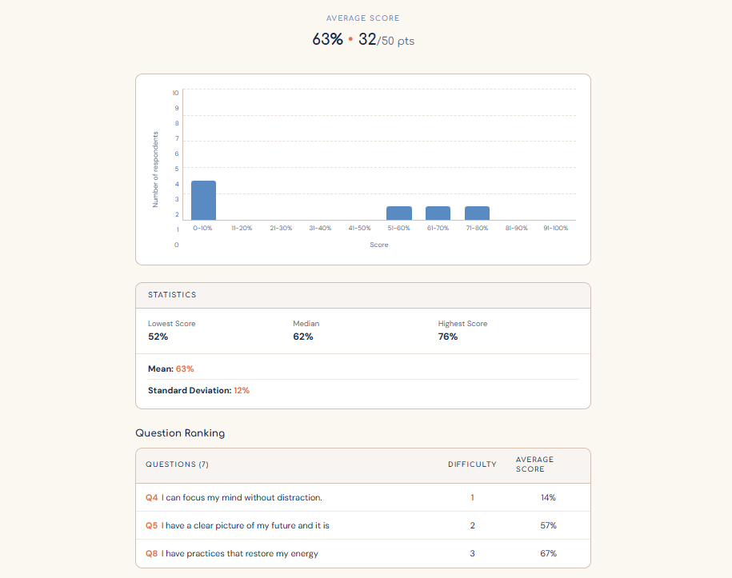
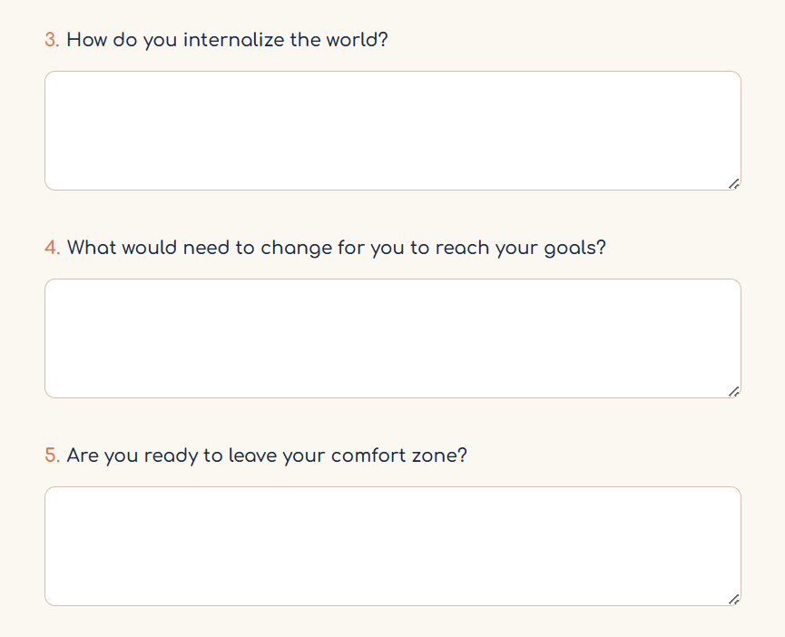
PlanWe sit with you and design the mentorship plan around what the assessment surfaced.
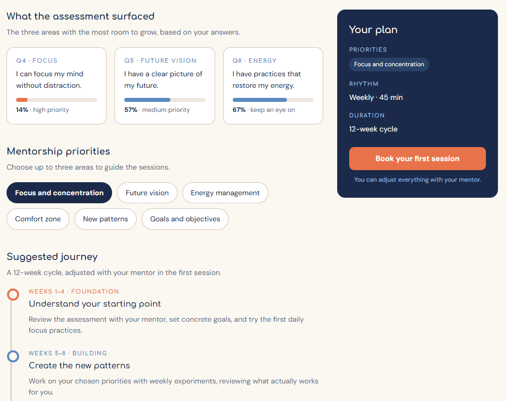
ImmerseThe goal is set during an immersive opening period with Izzy in the 7 Teachings, Reality Hack edition, in your child's language of choice: English, Russian, or Portuguese.
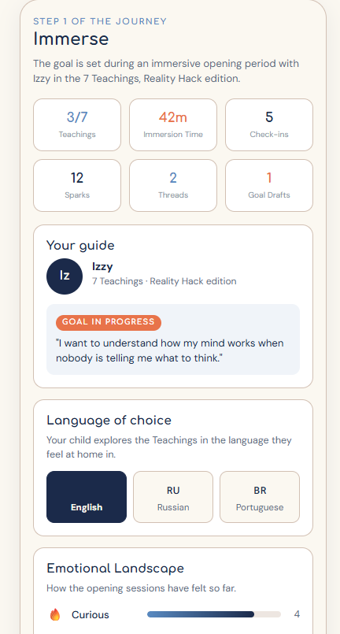
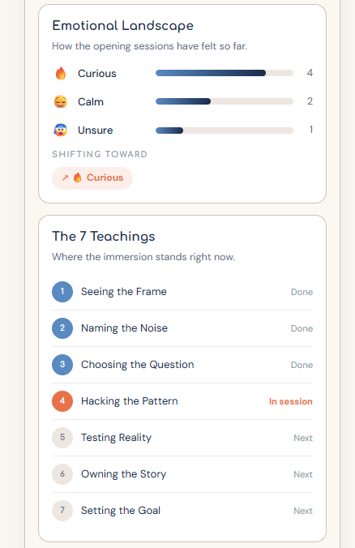
See EverythingEvery session is recorded in Read AI and shared with you through an interactive dashboard, with the full report available whenever you want to go deeper. Nothing about your child's mentorship happens out of your sight.
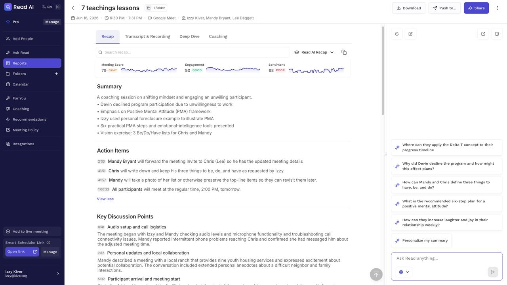
SpecialistsAs your child's interests sharpen, specialized mentors are brought in to match them: working experts in the exact field of the gift.
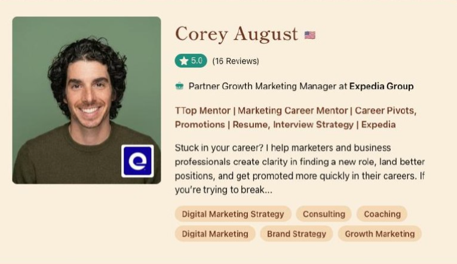
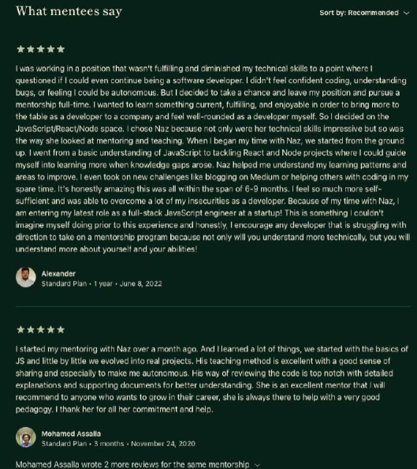
AtomsThroughout, the mentor captures atoms of clarity and capability: the small, dated moments of transformation that mark your child's development journey.
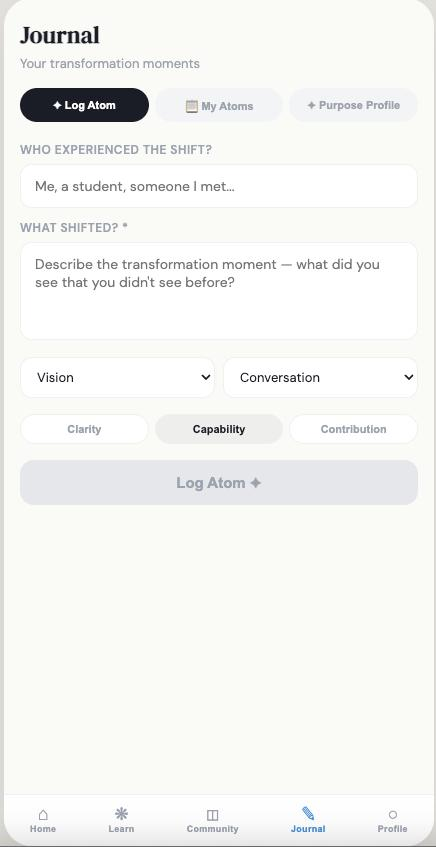
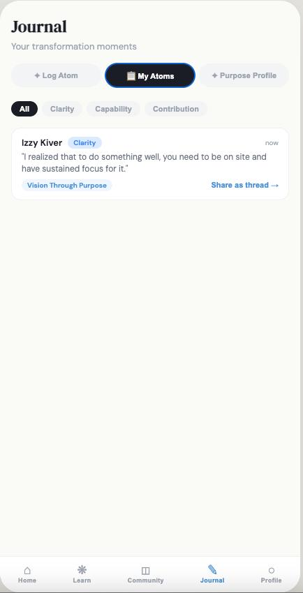
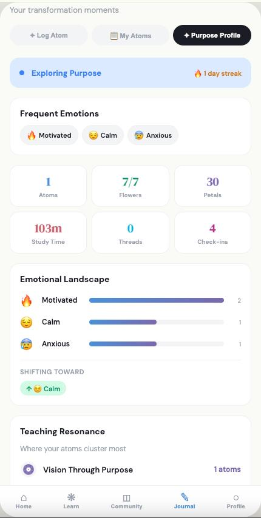
The Free Guide
Empowering Prodigious Children.
A mentorship blueprint for parents: how to see your child honestly, how to talk with them about what they are going through, and how to set the first small challenge yourself. A five minute read. Free.
✓ Check your inbox. The guide is on its way.
Something went wrong. Please try again.
No spam. The guide, then a story or two from the movement.
My brother Tolik was thirty-one years old when he took his life. He'd spent the last decade of his life managing a brain injury that would have given most people permission to quit everything: to quit caring, to quit showing up. The headaches alone were agonizing. I watched him grip a kitchen counter once until his knuckles went white, and when I asked what was wrong, he smiled and said he was just thinking about dinner.
That was Tolik. The man could be drowning and he'd still ask if you needed a glass of water. Losing him was the deepest pain I've ever experienced.
I sat with that grief for a decade, a timeline that mirrored his own battle with his injury. My epiphany finally came when I saw a fly throwing its entire being against a pane of glass. Thud. Thud. Thud. It could see the trees. It could see the sky. Freedom was right there, but it was killing itself trying to reach it. The open door was only six inches away.
I realized we were both that fly, slamming into invisible walls. The exit existed, but we just couldn't step far enough back to see it.
No one had ever given either of us that distance. That perspective. The ability to look at your own life from far enough away to see the door instead of the glass.
Except Tolik did give that to me. He just couldn't give it to himself.
We exist to carry his love forward, so no other child needs to live with that pain and that trapped feeling. We are here to continue my brother's love into the world, exactly as he would have wanted.
Rabbi Dr. Izzy Kiver, EdD · Founder
See the problem the way we see it.
Give it five minutes, and it will read like a conversation at your own kitchen table. If it doesn't sound like your child, close the tab with our respect.
We don't only work with parents. Our work extends to outstanding members of society who want to continue their influence through a gifted child that can grow up to be a success like them. We find the talent: gifted kids surfaced by parents, teachers, rabbis, and community leaders, then screened through psychometric evaluation and a PCI score before a single session is booked. We cultivate the child's gift with specialists in the child's own field: working experts and PhDs matched to the gift. And we put it to work in the world: real projects, real clients, real stakes. Twelve months, one child at a time, in English, Portuguese, and Russian. Thirty one cohorts in, 95 percent of our students finish.
The graduate you read about on this page left with backing from Microsoft and Nvidia, a paid contract, and a full four year scholarship. A sponsorship year develops a future global leader who shares your values and vision for the world.